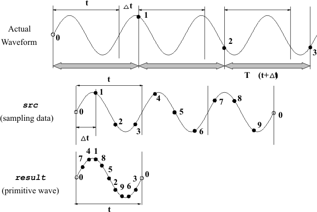
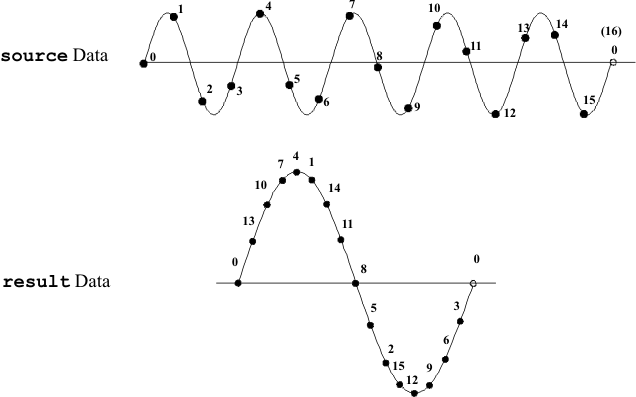

DSP_SHUFFLE
This API puts coherent sampling data into phase order to give a primitive wave.
DSP_SHUFFLE copies the src elements, which are coherent sampling data, into result so that the elements are in phase order as follows:
result[0] = src [0]
result[(rel_freq × 1 + size) mod size]
= src [1]
result[(rel_freq × 2 + size) mod size]
= src [2]
:
result [(rel_freq × (size - 1) + size) mod size ]
= src [ size - 1]

As shown in the above figure, t × rel_freq = Dt × size.
rel_freq ≠ 1.
size and rel_freq must be relatively prime. That is, these integers must have no common factors other than 1. For example, size=16, rel_freq=5 is acceptable. However, size=16, rel_freq=10 is not allowed because these integers have a common factor (2).
This API is defined in the header file /opt/hp93000/soc/prod_com/include/MAPI/libdsp.h.
Syntax
DSP_SHUFFLE(ARRAY_I& src, ARRAY_I& result,
INT rel_freq);
DSP_SHUFFLE(INT *src, INT *result, INT size,
INT rel_freq);
DSP_SHUFFLE(ARRAY_D& src, ARRAY_D& result,
INT rel_freq);
DSP_SHUFFLE(DOUBLE *src, DOUBLE *result,
INT size, INT rel_freq);I/O |
Parameter |
Description / Range |
|---|---|---|
I |
src |
Source array |
O |
result |
Result array |
I |
size |
Number of elements to be processed 1 ≤ size ≤ 2097152 size ≤ (size of result) |
I |
rel_freq |
Number of wave cycles used for coherent sampling rel_freq < size |
Example
DOUBLE source[16], result[16];
.
.
DSP_SHUFFLE(source, result, 16, 5);DSP_SHUFFLE puts five cycles of sine wave data into phase order as follows:
